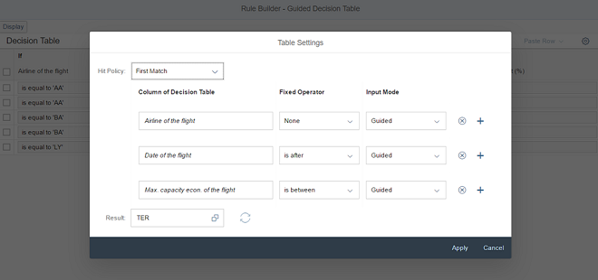
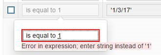
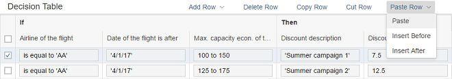

What's New in SAPUI5 1.48
With this release the UI development toolkit for HTML5 (SAPUI5) is upgraded from version 1.46 to 1.48.
Support Assistant and Other Support Tools
The new Support Assistant tool enables application developers to check whether they have built their applications in accordance with the best practices for building SAPUI5 apps. The tool uses a set of predefined rules to check all aspects of an application, for example, accessibility, performance, data-binding, and more. Support Assistant is integrated into One Page Acceptance Tests (OPA5) and can be used as part of OPA tests.
Creation and management of support rules
Application analysis
Results reporting

For more information, see Support Assistant.
We have also redesigned the other support tools, Technical Information Dialog and Diagnostics, reworked the Troubleshooting documentation section under Essentials, and created a Troubleshooting tutorial.
Reuse Components
You now declare reuse components in the descriptor for applications (manifest.json). A new factory function has been introduced for creating reuse component instances within the context of the current component. You can extend apps easily on the component level by replacing the usage of a reuse component with a variant that modifies the manifest.json values for the reuse component.
Another benefit is that the application index can index the declared reuse components. It can then optimize the determination of dependencies that should be preloaded during the component load. This is especially helpful for components that are packaged in libraries, since up to now the application could not identify and avoid a separate preload for these components (which ended in a 404 error).
You don't have to migrate old applications to the new logic to keep them working. But if you want to benefit from further improvements with regards to component loading and performance, as well as component extensibility (replace reuse component), you should consider updating the component usage accordingly.
For more information, see Using and Nesting Components and Descriptor for Applications, Components, and Libraries.
Object Page Personalization (experimental)
SAPUI5 flexibility services now support personalization of the object page. Activate this experimental feature and try it out!
For more information, search for Personalizing Apps in the documentation for your SAP NetWeaver version on the SAP Help Portal at https://help.sap.com/viewer/p/SAP_NETWEAVER.
Theme Parameter Tool
There is a new theme parameter tool for finding the best-fitting semantic LESS parameter for a new control. With this tool you can easily search, filter, and preview theme parameters.
With the tool, you can also preview all supported SAP themes and find information about the semantic parameter structure.
To find the tool, see Demo Apps.
-
sap.m.MessageView: Displays a summarized list of different types of messages. The MessageView is used to show the contents of sap.m.MessagePopover, but it can also be used in other container controls like sap.m.Dialog.
sap.m.MessageView also allows grouping of messages by setting the property groupItems and defining a groupName for each item. For more information, see the API Reference and the samples.

-
sap.m.CustomTreeItem: Similar to sap.m.CustomListItem for the sap.m.List control, the sap.m.CustomTreeItem control allows you to define custom item content for sap.m.Tree. For more information, see the API Reference and the sample.
-
sap.m.PDFViewer enables SAP Fiori developers to display PDF files in a consistent way across all browsers and devices. It encapsulates browser-specific PDF viewer plugins and provides a simple API to embed a PDF file into a page or to open it in a dialog box. For more information, see PDF Viewer, the API Reference, and the sample.

-
sap.rules.ui.RuleBuilder enables business users to create, edit, and view a decision table in an application. A decision table is a tabular visualization of a business rule. The Rule Builder control supports the following:
-
Setting the decision table’s hit policy (first match or all match).
-
Defining the condition columns (if statements) of the decision table.
-
Choosing the results set (then statements) of the decision table.
 -
Setting each column’s input mode:
-
Guided input mode (default) guides the user through the process of entering values for conditions in decision table cells.

-
Text input mode allows the user to enter text directly into conditions in decision table cells, and provides support via auto-suggest and validation services.

-
-
In both input modes, the client-side parser provides auto-suggestion and validation of values from the business vocabulary and business language relevant to the specific decision table. Errors are highlighted and messages provide alternative suggestions.
 -
Performing copy, cut, paste, insert after, and insert before actions on a row of a decision table.

For more information, see Rule Builder Control, the API Reference, and the sample.
-
-
sap.suite.ui.microchart.LineMicroChart: LineMicroChart is used primarily for embedded analytics applications and is designed to display a set of ordered points. These points are connected via lines that showcase a data progression for a specific data range. To display additional details, up to four labels can be added to provide, for example, key values or dimensions.
LineMicroChart provides regular points or emphasized points with or without semantic colors. It offers a standard line diagram with an automatically determined or predefined scale (with optional threshold).

For more information, see the API Reference and the samples.
-
sap.f.Avatar: With the use of the new detailBox aggregation, you can automatically open a sap.m.LightBox instance on user interaction with the sap.f.Avatar.
-
sap.f.DynamicPage: It is now possible to initialize the control with collapsed header. To enable the feature, set property headerExpanded to false.
-
sap.gantt:
-
Time period zooming: You can press button Z to activate the time period zooming mode. In this mode, you are able to fill the full chart area with a selected period of time. To indicate the start and end of the time period, move the mouse along the timeline with the left button pressed.
-
Additional vertical lines: You can use the AdhocLine class to draw additional vertical lines at specific time points in the chart area. These vertical lines help you mark milestones, such as the start of a project, and special events, such as holidays.
-
-
sap.m.ComboBox now highlights matching characters in the dropdown list. This behaviour is now aligned with all select controls.
-
sap.m.DatePicker: You can now set specific date or date ranges as non-working days by using the new type of the sap.ui.unified.DateTypeRange class, sap.ui.unified.CalendarDayType.NonWorking.
For more information, see the sample.
-
sap.m.GenericTile: With a new overflow concept that allows more flexibility in the layout of the tile designs, generic tiles are displayed in LineMode like list items when the screen width is less than 450px. With a screen width greater than 450px, the tiles are no longer truncated and the complete text is shown in a wrapped in-line design.
Compact and Cozy content densities are available for small (< 450px) and large (> 450px) screens. For more information, see the API Reference and the samples.
-
sap.m.PlanningCalendar:
-
You can now set specific date or date ranges as non-working days by using the new type of the sap.ui.unified.DateTypeRange class, sap.ui.unified.CalendarDayType.NonWorking.
-
You can now expand the grouping of overlapping appointments in the months view of the sap.m.PlanningCalendar. You can do this by setting the new property groupAppointmentsMode to sap.ui.unified.GroupAppointmentsMode.Expanded.
For more information, see the API Reference and the samples.
-
-
sap.m.TextArea controls with a limited text length can determine how to handle text that exceeds that length. By setting showExceededText=true, you can decide if those characters are visible or cut. The text area changes its value state and shows a counter of the extra characters when the threshold is reached. For more information, see the API Reference and the sample.
-
sap.m.UploadCollection: When grouping of UploadCollectionItems you can now provide the grouping feature for UploadCollection. After you have selected the grouping criteria, the grouping information is displayed as group header in the upload collection list. For more information, see the API Reference and the samples.
-
sap.m.Wizard now allows editing of any step in the sequence. By using the association currentStep and the method setCurrentStep, you can programmatically reach and then edit any step in the sequence. For more information, see the API Reference and the samples.
-
sap.suite.ui.commons.ChartContainer: There is a new Selection Details button in the chart container toolbar. When you choose this button, a popover opens with all the data that was selected in the currently visible chart. On mobile devices, a dialog box covering the entire screen area is used instead of a popover. To show the new Selection Details button, set the ChartContainer’s showSelectionDetails property to true. The button is set inside the main toolbar of the chart container next to the controlling buttons that are added automatically.
For more information, see the API Reference and the samples.
-
sap.suite.ui.microchart.InteractiveBarChart: The InteractiveBarChart provides optional min and max properties with which to control the scale of displayed bars. If these properties are not provided by the consumer, the chart uses a scale derived from the values of the displayed bars. For more information, see the API Reference and the samples.
-
sap.suite.ui.microchart: A default tooltip was added to InteractiveBarChart, InteractiveLineChart, and InteractiveDonutChart. When the user hovers over the interaction area in an interactive chart, a tooltip with the nontruncated version of the label and a non-abbreviated version of the measure appears. In interactive mode, the tooltip is generated separately for each interaction area. In non-interactive mode, only an aggregated tooltip is shown. You can customize or even suppress this at chart level or at interaction area level.
-
sap.ui.layout.BlockLayout:
-
New options for coloring individual cells have been added. For each BlockLayoutCell, you can set backgroundColorSet and backgroundColorShade. There are 11 predefined color sets, each with 4 color shades. The sets and shades can be easily customized in UI theme designer. You can also set an image as the background of a cell.
-
An additional breaking point for M-sized displays has been added.
For more information, see the API Reference and the samples.

-
-
sap.tnt.ToolPage: IconTabBar can now be used in sap.tnt.ToolPage. The ToolHeader is enhanced to allow IconTabBar elements. When inside the ToolHeader, the IconTabBar can use only labels and no icons.
-
You can now have no tab selected by setting the selectedKey property to a non-existing key value.
-
When IconTabHeader is used on smartphones and tablets, only completely visible tabs are displayed (no truncation). The rest of the tabs will overflow.
-
-
sap.ui.table: You can now highlight items in the tables of the sap.ui.table library (sap.ui.table.Table, sap.ui.table.TreeTable, sap.ui.table.AnalyticalTable), for example to indicate an error. For more information, see the API Reference for sap.ui.table.RowSettings and sap.ui.table.Table.setRowSettingsTemplate, and the sample.
-
sap.ui.unified.Calendar:
-
You can now show and hide week numbers with the use of a new property showWeekNumbers. This feature is disabled for the Islamic calendar.
For more information, see the API Reference and the samples.
-
You can now set specific dates or date ranges to be displayed as non-working by using the specialDates aggregation and sap.ui.unified.CalendarDayType.NonWorking enumeration type.
For more information, see the sample.
-
-
sap.ui.unified.ColorPicker: A responsive variant of the color picker control is now available in the sap.ui.unified library that is compatible for use with controls from the other responsive SAPUI5 libraries.
For more information, see the API Reference and the samples.
-
sap.ui.comp.smartfilterbar.SmartFilterBar:
-
The selection variants that are listed in the OData metadata and annotation files can now be displayed like variants defined on the UI of the variant management in the SmartFilterBar control.
For more information, see the API Reference and Smart Filter Bar.
- The SmartFilterBar control now supports a new annotation, com.sap.vocabularies.UI.v1.FilterFacets. With this annotation, you can group filter fields.
-
-
sap.ui.comp.smartchart.SmartChart:
-
There is a new experimental API that lets you read and write the current UI state of a SmartChart control. The scope of information that is included in this API is identical with the scope within an OData-based PresentationVariant.
For more information, see the API Reference.
-
Based on the com.sap.vocabularies.UI.v1.DataPoint annotation, you can define semantic patterns and coloring for the SmartChart control.
For more information, see the API Reference.
-
-
sap.ui.comp.navpopover.SmartLink: The SmartLink control supports a new annotation, SemanticObjectMapping. You can use it to map local properties to the parameters in a SemanticObject action.